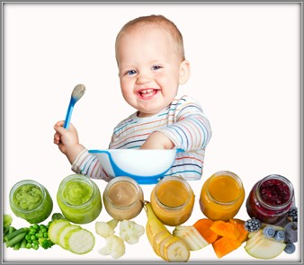
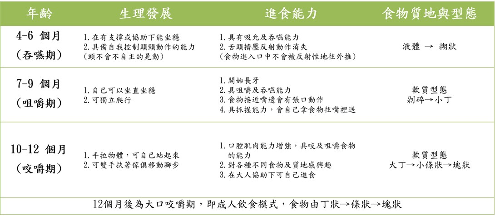
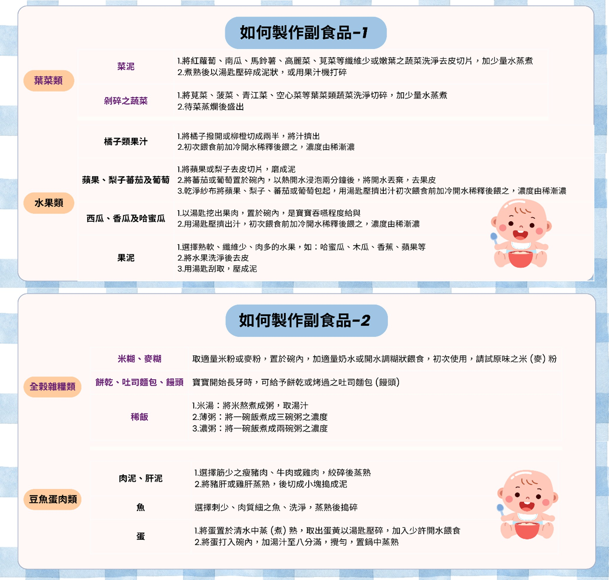

月號－哺乳育嬰站
月號－哺乳育嬰站當寶寶滿4～6個月大，腸胃、免疫與神經發展逐漸成熟，體內鐵質儲備開始下降，這正是開始添加副食品的適當時機，添加過程是否順利，與家長的營養知識與餵養方式密切相關。副食品是寶寶從單一奶類飲食，過渡到成人飲食的重要階段，添加的目的不僅是補足母乳或配方奶無法提供的營養，更有助於訓練寶寶的咀嚼與吞嚥能力，為一歲後的餐桌飲食做好準備。 |
|  |
| 添加副食品的好處 |
|
1.讓寶寶學習咀嚼與吞嚥技巧 2.適應各種味道與食物質地 3.促進語言發展與口腔肌肉成熟 4. 建立健康飲食習慣 |
| 餵食副食品的原則與目標，幫助寶寶建立好的飲食習慣 |
|
副食品階段是建立寶寶飲食行為的黃金期，目標是：養成不挑食的好習慣，練習自我進食的能力 |
|
成功添加副食品的6大技巧： |
|
1.建立明確用餐規則，定時定量、專心進食、固定時間及地點用餐 2.持續且溫和的嘗試新食物，給寶寶足夠練習的機會 3.家長以身作則，吃得健康就是最好的示範 4.規律生活作息，有助於食慾及消化 5.適度活動可提升食慾與代謝 6.營造輕鬆愉快的用餐環境，減少干擾、不責罵、不強迫，讓吃飯變快樂 |
| 添加副食品的注意事項 |
|
1.餵食方式與衛生安全: ･ 使用湯匙餵食、杯或碗盛裝，訓練吞嚥與咀嚼，雙手與食物務必清潔乾淨 2.添加順序與觀察原則: ･ 一次可少量新增一種食物，無過敏再換下一種，慢慢增加種類，須留意腹瀉、嘔吐、紅疹等過敏反應 3.食物質地與選擇: ･ 可先從穀物類開始（米精、麥精、稀粥），從泥狀到固體食物，一歲後，以多樣、均衡的固體食物為主 4.高敏食物及禁忌: ･ 蛋、魚、花生等高敏食物可少量開始嘗試，一歲前禁吃蜂蜜（防肉毒桿菌），避免堅果、果凍、糖果等易噎到的食物 5.副食品製作與保存: ･ 不添加鹽、糖、味精，避免腎臟負擔，可適量給果汁(天然自製)，避免影響其他營養攝取；冷藏副食品須 24小時內食用完畢 6.營養補充建議: ･ 加入富含鐵與維生素D的食物（如蛋黃、豬肝、魚、菇類）；避免大量攝取大型魚類，因有蓄積較高濃度甲基汞之情形，對嬰兒神經發育可能造成危害。 |
| 寶寶在不同階段生理及進食能力發展 |
|  |
| 如何製作副食品 |
|  |
副食品添加是寶寶邁向獨立飲食的重要里程碑，不僅是營養，更影響未來的飲食習慣與發展；掌握正確的添加時機與方法，觀察寶寶的反應，耐心陪伴他們每一次的嘗試，就能幫助孩子建立良好的進食行為，為健康打下紮實的基礎。 |
資料來源 |